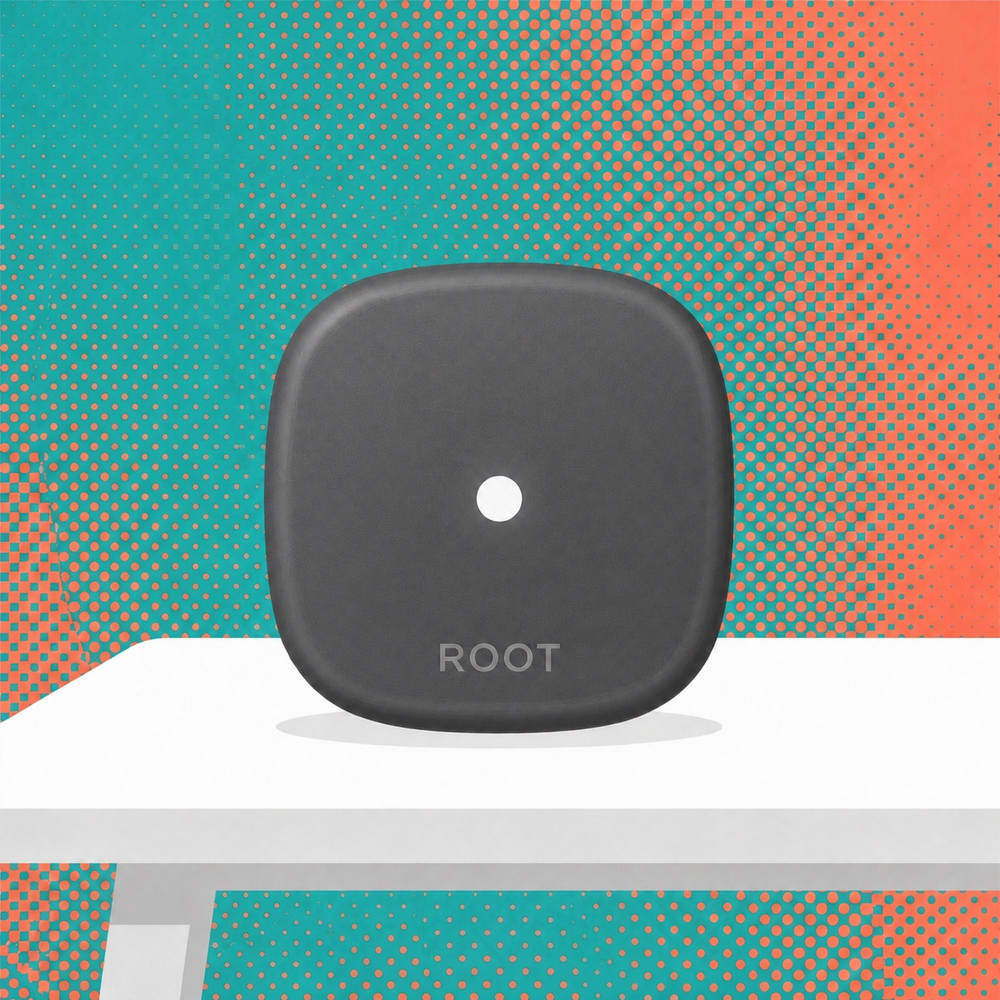

Comfort at bed level
ROOT is designed to focus on the place where you rest, not just the air high up in the room.
A quieter way to shape your split-AC routine, designed around the room you are actually in.

WHY ROOT
ROOT is designed to focus on the place where you rest, not just the air high up in the room.
Keep it close on a bedside surface, or choose a clean wall position when you want the room to feel quieter.
A considered, unobtrusive object for the room you wind down in, with a single discreet status light.
LOCAL CONTROL LOOP
ROOT measures temperature, humidity, and presence where you rest, then sends infrared commands to the split AC from the device itself. The control path does not depend on a cloud round-trip.
NETWORK-INDEPENDENT OPERATION
ROOT is set up with your existing AC remote and runs its sensing and control loop locally. That makes it practical for Indian homes where Wi-Fi can be inconsistent, unavailable, or simply unnecessary for basic operation.
Review the local control pathBEHIND THE SURFACE
Its calm exterior is only the visible part of the experience. The product is designed to bring sensing and control into a single, unobtrusive room object.
Illustrative technology view. Internal layout may change before production.

FOR YOUR ROOM
Every split-AC arrangement is a little different. Tell us about your room, unit, and preferred placement, and we can help you assess the right next step.
ROOT is a compact controller intended for split-AC environments. Final specifications, supported configurations, and included accessories will be shared when they are validated for production.
Understand the built-in AC thermostat flaw, wired thermostat barriers, and how ROOT creates continuous real-world room comfort.
Even a 24°C AC setting feels freezing cold after running for a while. Why? Because the thermostat built in the AC measures return air near the ceiling, not your bed.
There is a 3°C to 4°C temperature difference between your bed and ceiling return air. The AC compressor keeps running aggressively until the return air hits 24°C—leaving your sleeping area at a freezing 20°C.
Traditional smart thermostats like Nest or Ecobee are built for central HVAC systems requiring 24V wired relay cables. Split ACs have zero wired thermostat ports.
To control a Split AC automatically, you need an Infrared (IR) based controller—which in reality is just a remote control. Basic IR blasters and mobile apps lack true local room sensing and occupancy radar.
ROOT combines bed-level climate sensing with an onboard 360° IR array. The MCU evaluates the room state and sends AC commands locally, so the core comfort loop does not require a Wi-Fi network, cloud API, or wired thermostat.
No Wi-Fi network is required. Place ROOT near the bed or couch, match your existing Split AC remote, and keep the control loop on the device.
Set ROOT on your nightstand or side table. Placing it near your sleeping or sitting area ensures it senses true occupant micro-climate rather than ceiling return air.
Press any button on your existing Split AC remote facing ROOT. Onboard 38kHz IR learner automatically detects and saves your AC remote control signals.
After the remote match, ROOT monitors temperature, humidity, and presence, then sends 360° IR adjustments on-device. Active Wi-Fi or internet access is not required.
Designed for modern bedrooms: choose between tabletop placement or wall mounting, with industrial-grade sensing and control running locally on ROOT.
Set ROOT directly on your bedside table or couch stand. Its 360° omnidirectional IR lens array and weighted anti-slip base ensure perfect room coverage and bed-level sensing.
Mount ROOT cleanly on any bedroom wall using the magnetic wall bracket or residue-free 3M adhesive strip. Ideal for clean wall setups with direct line-of-sight to your Split AC.
ROOT is built around industry-grade sensing and control components, with the comfort logic running locally on the device instead of relying on a cloud service.
Minimalist matte black squircle pebble form factor built on tested PCB component modules.
ROOT is crafted with a compact pebble footprint that sits quietly on your side table or nightstand. Discreet ambient status telemetry communicates local cooling adjustments without bright, distracting displays.

Local MCU control; Wi-Fi optional
The primary MCU executes the comfort algorithms and deterministic real-time control loop. ROOT can sense the room and adjust the AC without an active Wi-Fi network or external cloud service.
Adjust ambient environment parameters to see how ROOT prevents aggressive AC temperature swings.
See how ROOT’s 100% local MCU Edge AI and 24GHz mmWave presence radar compare with traditional AC remotes, basic IR blasters, and smart apps.
| Feature Dimension | Standard AC Remote | Basic IR Blaster | Smart AC App | ROOT Edge Autopilot |
|---|---|---|---|---|
| Execution Model (Cloud vs Local) | Manual Buttons | Cloud Dependent | Cloud Server API | 100% Local MCU Edge AI (Zero Outages) |
| Human Occupancy Radar (Breathing Sense) | No | No | No Sensor | Integrated 24GHz mmWave Radar Array |
| App Proximity Auto-Detection | No | No | GPS Geofence Only (Location Delay) | Instant BLE 5.0 RSSI Signal Sensing |
| Flexible Mounting Options | Handheld | Wall / Table | Phone Only | Tabletop Base & Magnetic Wall Mount |
| Power Cut / Outage Backup Support | AAA Batteries | Wall Outlet Only | N/A | 5V USB-C & Portable Power Bank Support |
| IR Emitter Base Coverage | Directional Pointing | Single Emitter LED | Single Emitter LED | 360° Omnidirectional Quad IR Beam |
| Network Dependency | None | Usually required | Required | Wi-Fi optional; sensing and AC control run locally |
| Bed-Height Climate Micro-Sensing | No | No | Wall Sensor / Phone Only | Precision Temp ±0.1°C + Humidity + PMV |
| Nighttime Bedroom Aesthetics | No Display | Status Light | Phone Screen Glow | Matte Black Squircle + Ambient Status LED |
Questions about compatibility, local logic, and hardware setup.
Yes. ROOT features a 38kHz IR receiver that learns your existing Split AC remote control signals during a 2-minute setup process.
No. ROOT is a thermostat for IR-controlled ACs, not just an IR blaster. It combines room sensing with local autonomous control to adapt comfort to changing conditions outside, without requiring an active Wi-Fi connection.
ROOT offers flexible dual-mounting: place it flat on your bedside table or couch stand for bed-level sensing, or mount it cleanly on any wall using the included magnetic wall bracket or residue-free 3M adhesive strip.
ROOT can be powered from a stable 5V USB-C source, including a power bank. However, the AC unit itself also needs mains power, so a power bank cannot keep cooling active during a household outage.
No. ROOT runs 100% of its comfort decision loops locally on the onboard MCU. Internet access is not required for continuous cooling autopilot.
Early units are custom 3D-printed hardware enclosures containing our fully-tested PCB prototype platform.
COMPATIBILITY ENQUIRY
Share your AC model, room and city, and preferred placement. We’ll reply by email about compatibility and practical next steps.
Start an email enquiry